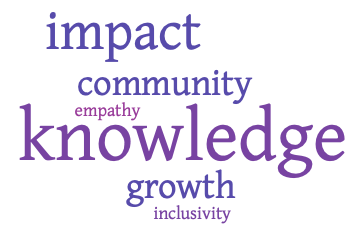

My UW journey began in 2012, when I arrived in Seattle from Dubai to study Molecular Biology. I was 17, in a different country, diffident yet excited. Almost a decade later, I am an engineer and still excited. However, my diffidence has given way to a strong set of values and identity, which have been established through a vibrant mosaic of UW experiences.
The Husky experience has given me countless opportunities to learn, fail, grow and reflect on who I am and what is meaningful to me. Upon graduation, I will not only possess invaluable professional skills, but will have a wealth of incredible relationships for the rest of my life. The UW has shaped me into who I am now and I am grateful to be a part of its community and have the opportunities it has to offer.
Identities
In addition to identifying as a heterosexual woman of color, my Husky experiences have revealed the following facets of my identity:
Engineer
I am a capable engineer who can navigate a highly technical field and address pressing issues of tomorrow.
Educator
As an educator at the UW, I have recognized that empathy, evidence and community drive my teaching philosophy.
Experiential Scholar/Entrepreneur
UW's innovative ecosystem has inspired my research in innovation and interest in entrepreneurhsip.
Values
All elements of my identity underlie the following core values:

Key Experiences
Three key UW experiences have shaped my identity and values: